XE는 'eXpress'와 'Engine'이라는 두 단어를 합쳐 만든 이름으로, '사람들이 자신의 생각이나 느낌을 표현할 수 있도록 도와주는 장치'라는 의미를 담았습니다.
XE는 서버 컴퓨터에 설치해서 쓰는 웹 사이트 제작 프로그램입니다. 웹 사이트를 만들기 위해서는 HTML, CSS, PHP, SQL 등과 같은 프로그래밍 언어를 기본적으로 알아야 합니다. 하지만 XE를 사용하면 프로그래밍 언어를 잘 모르더라도 웹 사이트를 쉽게 만들 수 있습니다.
XE는 XE core라는 핵심 프로그램을 기반으로 다양한 추가 기능을 조합하여 사용자가 원하는 웹 사이트를 제작할 수 있습니다.
XE는 Textyle(블로그형), CafeXE(카페형), PlanetXE(마이크로 블로그형) 등 다양한 모듈을 제공합니다. 사용자는 만들고자 하는 사이트에 적합한 모듈을 선택하여 편리하게 사이트를 구축할 수 있습니다.
모듈형 구조
XE에서 모듈은 하나의 프로그램을 의미합니다. XE는 기능의 제작과 추가, 사용이 쉽도록 레고 블록과 같은 모듈 구조로 제작되었습니다. 사용자는 XE에서 제공하는 기본 모듈과 커뮤니티를 통해 공유되는 확장 기능을 자유롭게 조합하여 다양한 웹 사이트를 제작할 수 있습니다. 개발자는 XE에 추가할 수 있는 새로운 기능의 모듈을 쉽게 개발하고 커뮤니티를 통해 공유할 수 있습니다.
오픈 커뮤니티
XE는 오픈 커뮤니티를 통해 다양한 정보를 제공합니다. XE 커뮤니티에는 제로보드 시절부터 사용해 온 사용자와 자유/오픈 소스 프로젝트 멤버가 많습니다. 사용자는 커뮤니티 내에서 원하는 정보를 찾거나, 다른 사용자들에게 자유롭게 문의할 수 있습니다.
다국어 지원
XE는 여러 나라의 언어를 지원합니다. 사용자는 웹 사이트를 언어별로 분리하지 않고도 한국어뿐 아니라 영어, 일본어, 중국어, 러시아어 등의 웹 사이트를 쉽게 제작할 수 있습니다.
용어 정리
APMsetup
XE를 설치하는 데 필요한 구성 요소인 아파치 웹 서버, PHP, MySQL 데이터베이스를 한 번에 설치하고, 사용에 필요한 연동 설정을 자동으로 해 주는 프로그램. 공식 사이트는 http://www.apmsetup.com/입니다.
XE에서 만들어진 웹 페이지를 XE의 기본 사이트와 다른 별개의 사이트처럼 사용할 수 있는 기능.
레이아웃
사이트에 설치한 추가 기능의 배치를 담당하는 구성 요소.
모듈
XE에 추가해서 사용할 수 있는 하나의 프로그램.
쉬운 설치
XE에서 모듈, 스킨 등의 추가 기능을 설치할 때 XE 공식 사이트에서 소스를 다운로드해서 서버에 업로드할 필요 없이 사이트에서 XE 공식 사이트와 연동하여 선택한 추가 기능을 설치할 수 있는 기능.
스킨
사이트에 설치된 프로그램의 디자인.
애드온
모듈 기능의 동작 사이에 끼어들어 자신의 기능을 수행하는 작은 프로그램.
위젯 스타일
위젯의 외관을 꾸미는 구성 요소.
위젯
레이아웃이나 페이지 모듈에 삽입되어 동작하는 구성 요소.
제로보드
1999년 개발된 게시판 소프트웨어. 제로보드 XE를 거쳐 현재의 XE로 발전되었습니다.
사이트맵
각 메뉴를 그룹핑하여 모아놓은 것으로 사이트맵을 사이트의 상단, 좌측, 우측, 하단 등에 배치하여 사용할 수 있습니다.
설치 및 제거
설치 전 준비
XE는 설치형 웹 응용프로그램입니다. XE를 사용하여 사이트를 만들기 위해서는 XE가 설치될 웹 서버가 필요합니다. XE를 설치할 서버의 공간을 확보하는 방법에는 여러 가지가 있지만, 크게 나누어 직접 서버로 사용할 컴퓨터를 확보하는 방법과 비용을 지불하고 웹 호스팅 업체가 제공하는 웹 서버의 공간 일부를 임대하는 방법이 있습니다.
설치 프로그램 목록
웹 서버가 구축된 환경에서 XE 설치를 위해 필요한 프로그램 목록은 다음과 같습니다. WPI(Microsoft Web Platform Installer)나 APMsetup을 사용해서 XE를 설치할 경우에는 아래 프로그램이 자동으로 설치됩니다. 그렇지 않은 경우에는 필요한 프로그램과 라이브러리를 미리 확인하여 설치해야 합니다.
설치 프로그램 목록
프로그램
필수/선택
PHP
PHP 5.3 이상
필수
PHP 5.5 이상
권장
PHP 라이브러리
XML 라이브러리
필수
GD 라이브러리
필수
ICONV
필수
DBMS(Database Management System)
CUBRID, MySQL 4.1 이상, MS-SQL
택1
XE core 설치 파일 다운로드
XE를 사용하여 사이트를 생성하려면 XE core를 설치해야 합니다. XE core는 XE의 설치와 운영을 담당하는 핵심 프로그램입니다. XE core에는 사이트 관리에 사용되는 기능이 없습니다. 하지만 XE core가 있어야 사용자가 추가 기능(모듈, 레이아웃, 스킨 등)을 설치하고 실행할 수 있습니다.
Windows 환경에서 WPI를 사용해 XE를 설치할 때는 XE core 설치 파일을 다운로드할 필요가 없습니다.
다운로드 받은 XE core 설치 파일의 압축을 해제한 후 서버에 업로드하려면 zip 파일을, 압축 파일을 서버에 업로드한 후 압축을 해제하려면 tgz 파일을 다운로드합니다. 각 형식의 파일 업로드 방식은 "XE core 설치 파일 형식별 업로드 방법"을 참조하십시오.
서버 환경 설정
XE는 서버 OS 종류에 상관없이 "설치 프로그램 목록"이 설치된 모든 환경에서 설치할 수 있습니다. 사용자는 XE를 설치하기 전에 필요한 웹 서버 환경을 구축해야 합니다.
Windows 환경에서는 WPI나 APMsetup 중 하나를 선택해서 필요한 설치 프로그램과 XE를 함께 설치할 수 있습니다. 자세한 내용은 "Windows 환경 설정"을 참조하십시오.
Linux 환경에서는 XE를 설치하기 전에 "설치 프로그램 목록"의 프로그램을 수동으로 설치해야 합니다. 각 프로그램의 자세한 설치 과정은 이 문서에서 설명하지 않습니다. Linux 환경에서 계정을 설정하거나 원격으로 서버에 접속하는 방법, XE core 설치 파일을 업로드하는 방법은 "Linux 환경 설정"을 참조하십시오.
XE core 설치
XE core를 설치하는 과정은 다음과 같습니다.
웹 브라우저를 통해 XE core 설치 파일을 업로드한 경로(www.example.com 또는 www.example.com/xe)로 접근합니다.
다음과 같이 사용할 언어를 선택하는 화면에서 원하는 언어를 선택하시고 '다음' 버튼을 누릅니다.
참고
페이지에 접근은 되지만 이미지가 제대로 보이지 않거나 내용이 비어 있으면, XE core 설치 파일을 다시 업로드해야 합니다.
필수 설치 조건이 모두 가능으로 표시된 것을 확인하고 '설치를 진행합니다'를 클릭합니다.
이 화면에서 '자세히'를 클릭하면 XE core를 설치할 때 최소 PHP 버전과 필수 라이브러리 설치 여부를 자동으로 확인할 수 있습니다. 필수 설치 조건에 가능으로 표시되지 않은 항목이 있으면 오류 메시지를 확인하여 해결합니다.
짧은 주소를 사용할 수 없을 경우 경고창이 나타납니다. 짧은 주소를 사용하길 원치 않을 경우에는 그대로 설치를 진행합니다.
참고
파일 권한 설정 오류 때문에 퍼미션이 불가능으로 표시될 때는 "XE 설치 시 권한 설정 누락 오류"를 참조하십시오.
XE에서 사용할 DBMS를 선택하고 아래의 설치를 진행합니다를 클릭합니다. 이 문서에서는 mysqli를 선택합니다.
참고
XE에서 사용 가능한 DBMS가 없으면 모든 항목이 비활성화됩니다. 이때는 사용할 DBMS를 직접 설치하거나, 호스팅 업체에 설치를 요청합니다.
다음과 같이 DB 정보를 입력하고, 다음을 클릭합니다. 추가적인 설정의 변경이 필요할 경우에는 '고급 설정'을 클릭해서 수정할 수 있습니다.
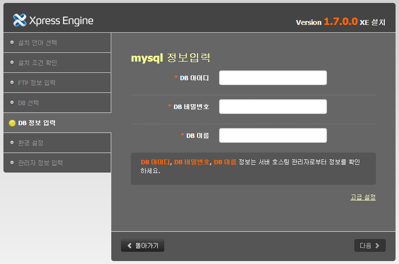
관리자 정보를 입력합니다. XE 1.5부터는 이메일 주소가 로그인 계정이므로 실제 관리자가 사용할 이메일 주소를 입력하시기 바랍니다.
설치가 완료되면 다음과 같이 XE Home(시작 페이지)이 나타납니다.
제거
XE를 더 이상 사용하지 않는다면 XE가 설치되어 있는 폴더의 하위 내용을 모두 삭제합니다.
XE를 사용해서 제작한 사이트를 운영하는 데 사용된 모든 데이터는 DB에 저장됩니다. 데이터를 모두 삭제하려면 사이트 운영에 사용된 모든 DB 테이블을 삭제합니다. XE를 재설치하거나 서버를 이전할 때는 데이터를 이관하여 재사용할 수 있습니다.
자세한 데이터 삭제 및 이관 방법은 사이트 운영에 사용한 DBMS의 사용법을 참조하십시오.
XE core 둘러보기
관리자 페이지 시작
다음과 같이 XE 관리자 페이지를 열고 관리자 계정 정보를 입력하여 로그인합니다. 아래 주소에서 'example.com'은 XE가 설치된 도메인 주소를 의미합니다.
짧은 주소(mod_rewrite)를 사용할 경우:
http://example.com/admin
짧은 주소(mod_rewrite)를 사용하지 않는 경우:
http://example.com/index.php?module=admin
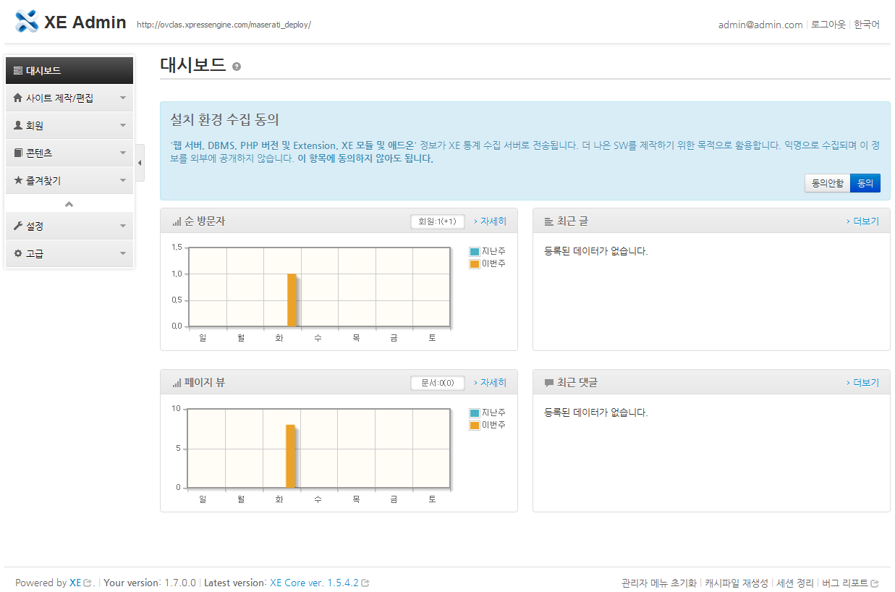
XE 관리자 페이지
XE 관리자 메뉴
이 절에서는 관리자가 사용 가능한 기본 메뉴를 설명합니다.
대시보드
XE 관리자 홈입니다. 통계 및 사이트 현황, 최근 글, 댓글, 엮인글, 공지 등을 보여 줍니다.
사이트 제작/편집
사이트 메뉴 편집
사이트에서 사용되는 메뉴를 타입별로 쉽게 생성, 수정, 삭제할 수 있게 도와줍니다. 기본적으로 설치가 되지 않은 메뉴 타입이 있을 경우에는 손쉽게 설치할 수 있습니다. 또한 메뉴의 디자인 및 설정 정보도 손쉽게 수정이 가능합니다. 디자인 정보를 별도로 설정하지 않는다면 '사이트 디자인 설정'에서 설정한 내용이 적용 됩니다.
사이트 디자인 설정
사이트에서 사용되는 기본 디자인 설정을 할 수 있도록 도와 줍니다. 기본적으로 제공하는 디자인 설정 뿐 아니라 직접 html, css를 수정할 수 도 있습니다. 이곳에서 수정한 내용은 각 메뉴에서 별도로 설정하지 않는이상 모두 적용 됩니다.
회원
회원 목록
사이트에 가입된 사용자 목록을 보여줍니다. 사용자의 소속 그룹을 변경하거나, 로그인 차단 등 사용자 정보를 확인, 수정, 삭제할 수 있습니다.
회원 설정
사이트 회원 가입 허가, 회원 가입 시 입력 양식 등 회원 관리에 필요한 다양한 설정을 할 수 있습니다.
회원 그룹
사이트에서 사용하는 회원 그룹을 관리합니다. 새로운 그룹을 생성하거나, 기존 그룹을 수정, 삭제할 수 있습니다.
참고
회원 그룹 내 '관리그룹'과 '관리자'의 차이는 "관리그룹, 관리자"를 참고하시기 바랍니다.
포인트
회원이 글, 댓글을 작성하거나 업로드, 다운로드할 때 포인트를 부여할 수 있습니다. 또한 그룹의 레벨을 설정하여 포인트를 통한 레벨 업그레이드 기능을 설정할 수 있습니다.
콘텐츠
문서
사이트에 등록된 문서를 관리합니다. 문서 내용을 확인하고 삭제할 수 있으며, 회원이 신고, 삭제한 문서를 확인할 수 있습니다.
댓글
사이트에 등록된 댓글을 관리합니다. 댓글 내용을 확인하고 삭제할 수 있으며, 신고된 댓글을 확인할 수 있습니다.
엮인글
외부에서 링크했거나 엮인글의 목록을 볼 수 있습니다. 엮인글의 허용 여부를 선택할 수 있으며, 엮인글을 허용하지 않으면 글을 엮을 수 없고 링크하더라도 표시되지 않습니다.
파일
사이트에 등록된 글과 댓글에 첨부된 파일을 관리합니다. 등록된 파일을 삭제할 수 있습니다.
설문
사이트에 등록된 설문 콘텐츠를 관리합니다.
RSS
XE를 통해 생성된 다양한 모듈의 RSS(Rich Site Summary) 피드를 하나로 묶어서 제공할 수 있습니다. 기본값은 통합피드 사용입니다. 사이트 초기 화면을 통해 통합 피드가 제공되며, 피드 공개가 허용되지 않은 개별 모듈은 피드 목록에서 제외됩니다. 일부 모듈은 피드 공개의 기본값이 공개하지 않음으로 되어 있으므로, 모든 피드를 공개하려면 반드시 개별 모듈의 추가 설정 메뉴에서 피드 공개 항목이 전문 공개 또는 요약 공개로 되어 있는지 확인해야 합니다.
다국어
XE는 글로벌 사이트를 별도로 생성하지 않고 하나의 사이트에서 다국어를 지원합니다. 다국어에 추가한 단어/문장에 연동된 목록은 사이트 언어 설정을 변경하면 자동으로 해당 언어의 내용으로 변환되어 표시됩니다. 다국어 메뉴는 사이트에 사용된 다국어 목록을 관리합니다. 등록된 다국어 목록을 확인할 수 있으며, 새로운 단어 또는 문장을 추가할 수 있습니다.
문서나 댓글을 삭제하면 DB에서 바로 제거하지 않고 휴지통으로 이동합니다. 관리자가 내용을 다시 확인한 후 삭제된 문서나 댓글을 복구하거나 완전히 삭제할 수 있습니다.
스팸필터
글, 댓글 등이 등록될 때 스팸 여부를 확인하여 등록을 금지할 수 있습니다. 스팸필터 관리 메뉴에서 금지 IP와 금지 단어 목록을 설정할 수 있습니다.
즐겨찾기
'고급 > 설치된 모듈'에서 자주 사용하는 모듈의 별 모양을 클릭하면 즐겨찾기에 추가할 수 있습니다. 추가 된 즐겨찾기는 '즐겨찾기' 메뉴에 노출됩니다.
설정
일반
사이트 시작 화면을 결정하는 기본 모듈 설정, 기본 언어 등 사이트를 운영하기 위해 필요한 기본 설정을 할 수 있습니다. 또한, 보안을 위한 관리자 페이지 접근 가능 IP 대역 지정 등 다양한 고급 설정이 가능합니다.
사이트 제목: XE Core 1.7 이상에서 새롭게 추가된 값입니다. 레이아웃에서 {Context::getSiteTitle()} 변수로 표시할 수 있습니다. default 레이아웃에 적용되어 있습니다.
홈페이지: 사이트 접속 시 기본으로 호출될 페이지 지정할 수 있습니다.
모바일 뷰 사용: 모바일 기기로 접속시 모바일 페이지를 보여줍니다.
관리자 IP대역: 관리자 페이지로 접근가능한 IP대역을 지정합니다. 해당 IP에 대해서만 관리자 페이지로 접근이 가능하므로 주의 바랍니다. IP대역 정보는 /files/config/db.config.php 파일에 저장됩니다. 여러개의 항목은 줄을 바꾸어 입력하세요.
기본 URL: 여러 사이트를 운영할 때 기본 URL이 필요합니다. XE 설치 경로를 포함한 URL을 입력하세요. (예: http://도메인/설치경로)
SSL(Secure Socket Layer) 사용: '선택적으로'는 회원가입, 정보수정 등의 지정된 동작(action)에서 보안접속(SSL)을 사용합니다. '항상 사용'은 모든 서비스에 SSL을 사용 합니다. SSL 환경이 갖춰지지 않은 상태에서 SSL을 사용할 경우 접속이 되지 않을 수 있으니 주의 바랍니다.
SSO 사용: 사용자가 한 번만 로그인하면 기본 사이트와 가상 사이트에 동시에 로그인이 됩니다. 가상 사이트를 사용할 때만 필요합니다.
인증 세션 DB 사용: 인증 시 사용되는 PHP 세션을 DB로 사용하는 기능입니다. 웹서버의 사용률이 낮은 사이트에서는 비활성화시 사이트 응답 속도가 향상될 수 있습니다. 단, 현재 접속자를 구할 수 없어 관련된 기능을 사용할 수 없게 됩니다.
Qmail 호환: Qmail등 CRLF를 줄 구분자로 인식하지 못하는 MTA에서 메일이 발송되도록 합니다.
사이트 잠금: 지정한 IP 외 접근을 차단할 수 있습니다.
접근 허용 IP: 이곳에 관리자의 IP가 반드시 포함되어야 합니다. 만약 접근이 차단된 경우 './files/config/db.config.php' 파일에서 `'use_sitelock' => 'Y'`를 `'use_sitelock' => 'N'`으로 변경하여 차단을 해제할 수 있습니다.
FTP 설정
쉬운 설치 사용을 위한 FTP 계정을 설정합니다.
관리자 설정
관리자 화면의 제목과 로고, 메뉴를 설정할 수 있습니다.
파일 업로드
사이트에 등록할 수 있는 파일의 종류와 크기 등을 설정할 수 있습니다.
파일 외부 링크: 리퍼러에 따라 파일 외부 링크를 차단할 수 있습니다.(*.wmv, *.mp3등 미디어 파일 제외)
파일 크기 제한: 하나의 파일에 대해 최고 용량을 지정할 수 있습니다.(관리자는 제외)
문서 첨부 제한: 하나의 문서에 첨부할 수 있는 최고 용량을 지정할 수 있습니다.(관리자는 제외)
파일박스
파일박스를 관리할 수 있습니다. 파일박스는 관리자가 재사용할 수 있는 이미지 파일을 관리하는 기능입니다. 회원 그룹 아이콘을 등록하면 이미지 파일은 파일박스에 업로드됩니다.
embed Filter
<iframe> 또는 <object>, <embed> 태그에 허용 할 URL을 지정할 수 있습니다. 주로 domain을 포함한 URL을 지정하여 허용 URL을 지정할 수 있습니다.
domain을 포함하지 않은 짧거나 단순한 단어('video', 'swf' 등)만을 지정할 경우 손쉽게 악의적인 접근을 시도할 수 있으니 주의해야 합니다.
주로 domain을 포함한 URL을 지정하여 허용 URL을 지정할 수 있습니다. 예시 : 'http://www.youtube.com/v/...'와 같은 URL을 <object>, <embed>에 허용 하려면 'http://www.youtube.com/v/'처럼 입력하면 됩니다.
고급
쉬운 설치
모듈, 스킨, 레이아웃, 위젯 등을 추가로 설치할 때, XE 공식 사이트에서 해당 소스를 다운로드해서 서버에 업로드할 필요 없이 사이트에서 XE 공식 사이트와 연동하여 선택한 추가 기능을 바로 설치합니다.
설치된 레이아웃
사이트에 설치된 레이아웃을 관리합니다. 각 레이아웃의 관리자 화면을 통해 인스턴스를 추가, 수정, 삭제할 수 있습니다.
설치된 모듈
사이트에 설치된 모듈을 출력합니다. 각 모듈의 관리자 화면에 접근하여 모듈을 관리할 수 있습니다. 목록의 즐겨찾기 버튼을 이용해서 자주 사용하는 모듈 관리자 링크를 화면 오른쪽 위에 즐겨찾기로 추가할 수 있습니다.
설치된 위젯
사이트에 설치된 위젯을 출력합니다. 각 위젯의 코드를 생성할 수 있습니다.
설치된 애드온
사이트에 설치된 애드온을 출력합니다. 각 애드온을 PC와 모바일 환경에서 사용하거나 사용하지 않도록 설정할 수 있습니다.
참고
1.5 버전부터는 쉬운 설치를 통해 설치된 레이아웃과 모듈, 위젯, 애드온을 '확장기능(v1.7에서는 고급) > 설치된 레이아웃, 설치된 모듈, 설치된 위젯, 설치된 애드온' 관리자 화면에서 삭제할 수 있습니다.
에디터
사이트의 기본 위지윅 에디터 설정과 확장 기능인 에디터 컴포넌트를 관리할 수 있습니다.
XE 추가 기능
XE 추가 기능의 종류
XE의 가장 큰 장점은 사용자가 원하는 다양한 기능을 추가하여 사이트를 좀 더 편리하게 운영할 수 있다는 것입니다. 다음과 같은 XE 추가 기능을 사용할 수 있습니다. 각 추가 기능의 설치 방법은 "추가 기능 설치 방법"을 참조하십시오.
모듈
XE에서 모듈은 하나의 프로그램을 의미합니다. 여러 개의 모듈이 모여서 하나의 큰 모듈을 구성하기도 하고, 모듈이 개별적으로 동작하기도 합니다. 즉, 모듈은 사이트에 특정 기능을 구현하기 위해 추가로 설치한 프로그램입니다.
XE에서 제공하는 대표적인 모듈에는 게시판, CafeXE, Textyle 등이 있습니다.
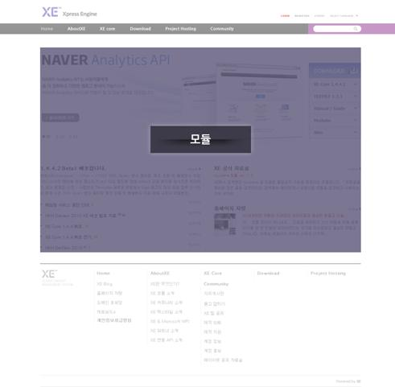
모듈
애드온
애드온은 모듈의 기능이 동작하는 사이사이에 끼어들어 자신의 기능을 수행하는 작은 프로그램입니다. 애드온은 모듈과 같이 스스로 기능을 수행하기는 하지만, 기능 수행 결과를 외부로 제공하지는 못한다는 점에서 모듈과 다릅니다.
XE에서 제공하고 있는 대표적인 애드온에는 기본 카운터, 모바일 XE 등이 있습니다.
위젯
위젯은 레이아웃 또는 페이지 모듈에 삽입되어 동작합니다. 모듈에서 이미 생성된 데이터를 표시하거나, 일부 데이터를 생산할 수도 있습니다. 예를 들어, 게시판 모듈에서 작성된 최신 글 목록을 사이트의 시작 페이지에 나타내고 싶을 때 위젯을 사용합니다. XE에서 제공하는 대표적인 위젯에는 언어 선택, 로그인 정보 출력 위젯 등이 있습니다.
위젯 스타일
위젯 스타일은 위젯의 외관을 꾸미는 역할을 합니다. 스킨이 위젯의 출력 부분을 꾸며준다면, 위젯 스타일은 위젯의 외곽부분에 대한 스킨이라고 생각할 수 있습니다. 위젯 스타일을 적용하면 외관 변경 외에도 위젯 블록에 제목이나 더보기 링크 등의 내용을 추가할 수 있습니다.
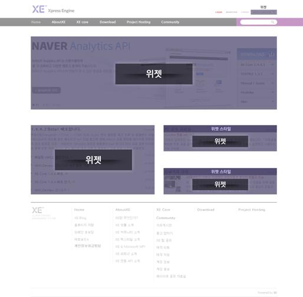
위젯과 위젯 스타일
스킨
스킨은 사이트에 설치된 프로그램의 디자인을 의미합니다. 즉, 스킨은 프로그램(모듈, 위젯)의 옷이라고 할 수 있습니다.
XE 공식 사이트에서는 프로그램별로 다양한 스킨을 제공하고 있습니다. 이를 잘 활용하면 본인만의 개성이 담긴 사이트를 운영할 수 있습니다.
레이아웃
사이트에 여러 가지 추가 기능을 설치한 후에는 이들을 화면에 적절하게 배치해야 합니다. 이렇게 화면 배치를 담당하는 것이 레이아웃입니다. 레이아웃과 추가 기능(모듈, 위젯)은 매우 긴밀한 관계를 유지합니다. 추가 기능이 없으면 레이아웃은 아무런 내용도 출력할 수 없기 때문에 화면에 표시되지 않습니다. 반대로 프로그램은 설치되어 있으나 레이아웃이 없으면 각 요소가 출력될 위치를 알 수 없기 때문에 역시 화면에 표시되지 않습니다.
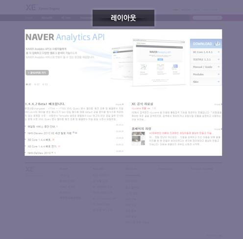
레이아웃
추가 기능 설치 방법
XE의 다양한 추가 기능을 설치 하는 방법에는 2가지가 있습니다. XE 공식 사이트에서 소스 파일을 다운로드해서 XE 설치 서버에 업로드하는 방법과 XE core에서 제공하는 쉬운 설치 기능을 사용하는 방법입니다.
참고
XE에서 추가 기능을 설치하는 것은 추가 기능의 소스 코드를 운영하고 있는 서버에 옮기는 것을 의미합니다. 즉, 추가 기능 설치 과정만으로는 실제 사이트에 표시할 콘텐츠를 제작할 수 없습니다. 추가 기능을 생성하여 사이트와 연동하는 과정은 "사이트 만들기"를 참조하시기 바랍니다.
소스 파일 업로드로 추가 기능 설치
XE 공식 사이트에서 추가 기능 소스 파일을 다운로드해서 XE 설치 서버에 업로드하는 방법입니다.
압축 해제한 board 디렉터리를 XE 설치 경로의 ./modules 디렉터리로 옮깁니다. 모든 모듈은 XE 설치 경로의 ./modules 디렉터리에 설치됩니다.
'고급 > 설치된 모듈' 목록에 다음 그림과 같이 게시판 모듈이 추가되었는지 확인합니다.
'이 항목 업데이트가 가능합니다. 업데이트하시겠습니까' 링크가 있을 경우에는 해당 링크를 클릭하면 설치가 완료됩니다.
쉬운 설치로 추가 기능 설치
FTP 설정
쉬운 설치로 추가 기능을 설치하려면 쉬운 설치 사용을 위한 계정을 설정해야 합니다. 방법은 다음과 같습니다.
관리자 메뉴의 '설정 > FTP 설정'을 클릭합니다.
다음과 같이 웹 서버의 FTP 계정 정보를 입력합니다.
아이디:
서버에 접근 가능한 아이디
비밀번호:
서버에 접근 가능한 비밀번호
아이디, 비밀번호 외에 추가정보의 수정이 필요한 경우에는 '고급'에서 수정할 수 있습니다.
FTP 서버 주소:
서버 주소는 XE가 설치된 서버로부터 접근하기 위한 주소입니다. 특별한 경우가 아니라면 XE는 자신이 설치된 서버에 구성 요소를 설치합니다. 따라서 자기 자신을 나타내는 주소인 localhost, 혹은 127.0.0.1을 입력합니다.
FTP port:
FTP 포트 번호의 경우 기본적으로 21을 쓰도록 되어 있으나, 서버에 따라 설정이 다를 수도 있습니다. 21이 아닐 때에는 서버 관리자에게 문의합니다.
Passive 모드를 사용:
클라이언트(사용할 웹 서버)가 방화벽 환경에 있어도 FTP 서비스를 정상적으로 사용할 수 있게 하는 기능입니다. 예를 선택해야 방화벽이 설치된 환경에서 FTP를 사용할 수 있습니다. 따라서 쉬운 설치 기능을 사용하려면 서버에서 FTP Passive mode를 지원해야 합니다.
SFTP를 사용:
FTP 프로토콜을 통해 주고받는 데이터는 암호화되어 있지 않습니다. SFTP(SSH File Transfer Protocol)를 사용하면 쉬운 설치 기능을 더 안전하게 사용할 수 있습니다. SFTP는 관련 PHP 모듈이 설치되어 있어야 사용할 수 있습니다.
사이트에 사용할 메뉴들을 모두 생성하였으면, 전체적인 디자인을 설정해야 합니다. 먼저 레이아웃 설정을 합니다.
관리자 화면에서 '사이트 제작/편집 > 사이트 디자인 설정 > 레이아웃'을 클릭합니다.
레이아웃 목록에서 'Bootstrap.Layout'을 선택합니다.
선택 후 'PC 설정 저장' 버튼을 눌러 내용을 저장합니다.
이곳에서 선택한 레이아웃은 위에서 생성한 '홈', '공지사항', '자유게시판', '등업게시판' 모두에 적용 됩니다. 단 각 메뉴별로 별도의 레이아웃을 적용할 수도 있습니다. 각 메뉴별 별도 레이아웃을 적용하고자 하는 경우에는 '사이트맵 > 디자인 > 레이아웃' 에서 '사이트 기본 레이아웃 사용'을 체크 해제한 후 원하는 레이아웃을 선택하면 됩니다.
페이지 수정
이 절에서는 각 게시판에 최신 글을 볼 수 있도록 홈페이지를 수정해 보겠습니다.
XE가 설치된 도메인 주소를 브라우져 창에 입력하고 들어갑니다. (ex: http://example.com/) 또는 관리자 페이지 상단 로고 우측에 있는 도메인을 클릭해도 됩니다.
아래와 같은 페이지가 표시되면 화면 오른쪽에 있는 '페이지 수정...'을 클릭합니다.
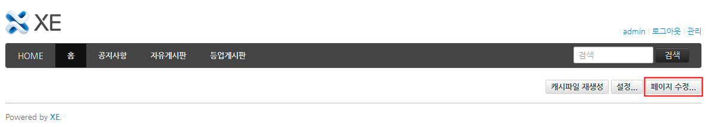
참고
페이지에 관리자 권한으로 접근하면 페이지의 콘텐츠를 편집하거나 설정할 수 있는 '캐시파일 재생성', '설정', '페이지 수정'이 표시됩니다. 이 버튼들이 보이지 않는다면 관리자 아이디로 로그인했는지 확인하시기 바랍니다.
각 게시판의 최신 글을 페이지에 출력하려면 콘텐츠를 출력할 수 있는 위젯이 필요합니다. 우선, 자유게시판 내용을 나타내기 위한 위젯을 생성합니다.
다음과 같이 페이지 수정 화면이 나타나면 Content 위젯을 선택하고 추가를 클릭합니다.
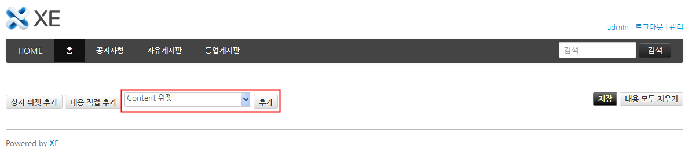
위젯 코드 생성 창이 나타나면 다음과 같이 필요한 항목을 입력하고 코드생성을 클릭합니다.
위젯:
Content 위젯 ver 0.1
스킨:
Content 위젯 기본 스킨(default)
캐시:
5분
추출대상:
변경하지 않음
내용형태:
이미지+제목+내용
탭형태:
없음
표시항목 및 순서:
제목, 등록일, 글쓴이, 내용
게시판 이름 표시:
출력하지 않음
댓글수 표시:
출력
엮인글수 표시:
출력
분류 표시:
출력
아이콘 표시:
출력
정렬 대상:
최신 등록순
정렬 방법:
내림차순
썸네일 생성 방법:
Crop(채우기)
이미지 가로 크기:
100
이미지 세로 크기:
75
가로 이미지수:
5
목록수:
5
페이지수:
1
new 표시 시간 (hours):
12
제목 글자수:
0
내용 글자수:
100
대상 모듈:
추가를 클릭하고 모듈 선택 팝업에서 모듈에 게시판으로 검색하여 자유게시판을 선택
HTML 출력방식:
Table
위젯이 생성되면 다음 그림과 같은 화면을 확인할 수 있습니다.
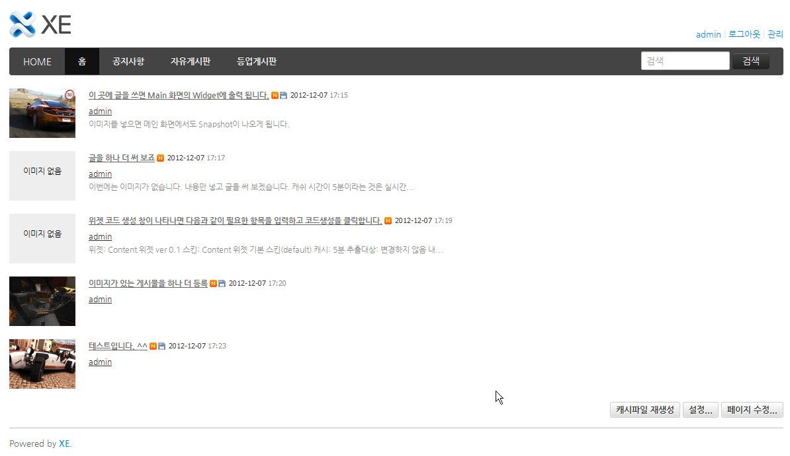
참고
게시판에 작성된 글이 없는 경우 위젯에 내용이 나타나지 않습니다. 위젯의 내용을 확인하기 위해서는 각 게시판에 테스트를 위한 게시물을 미리 작성해 두어야 합니다.
위젯 윗부분에 위젯과 연동되어 있는 게시판 이름과 게시판으로 이동할 수 있는 링크를 삽입하기 위해 위젯 스타일을 적용해 보겠습니다.
추가된 위젯 영역 위로 마우스 커서를 움직여서 위젯 영역 왼쪽 윗부분에 표시되는 아이콘 메뉴 중 위젯 스타일 추가()를 클릭합니다.
위젯 스타일 팝업 창이 나타나면 적용할 위젯 스타일로 심플 스트롱을 선택하고 설정을 클릭합니다.
위젯 스타일을 설정하는 화면이 나타나면 다음과 같이 설정합니다.
컬러셋:
하얀색
제목:
자유게시판
더보기 URL:
해당 게시판의 URL을 입력합니다. 자유게시판의 모듈 이름은 freeboard01이므로, http://xe설치경로/freeboard01을 입력합니다.
더보기 텍스트:
위젯과 연동된 게시판으로 이동하기 위한 링크의 텍스트입니다. 이 예제에서는 more로 지정합니다.
자유게시판 위젯에 위젯 스타일이 다음과 같이 적용되었는지 확인합니다.
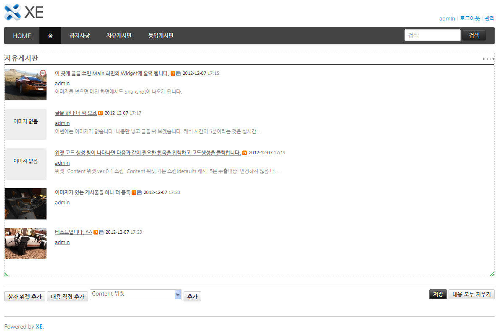
나머지 두 게시판과 연동되는 위젯을 생성하고 위젯 스타일을 적용합니다.
공지사항 코드를 생성할 때 아래의 설정 정보 외에 다른 내용은 모두 자유게시판 위젯을 생성할 때 입력한 내용과 동일하므로, 자유게시판 위젯 생성 과정을 참고하여 진행합니다.
내용형태:
제목
표시항목 및 순서:
제목, 등록일, 글쓴이
대상 모듈:
추가를 클릭하고 모듈 선택 팝업에서 모듈에 공지사항을 선택
등업게시판 코드를 생성할 때도 아래의 설정 정보 외에 다른 내용은 모두 자유게시판 위젯을 생성할 때 입력한 내용과 동일합니다.
내용형태:
제목
표시항목 및 순서:
제목, 등록일, 글쓴이
대상 모듈:
추가를 클릭하고 모듈 선택 팝업에서 모듈에 등업게시판을 선택
다음과 같이 3가지 위젯이 모두 추가되었는지 확인합니다. 단, 게시판에 게시된 글에 따라 위젯의 내용은 다를 수 있습니다.
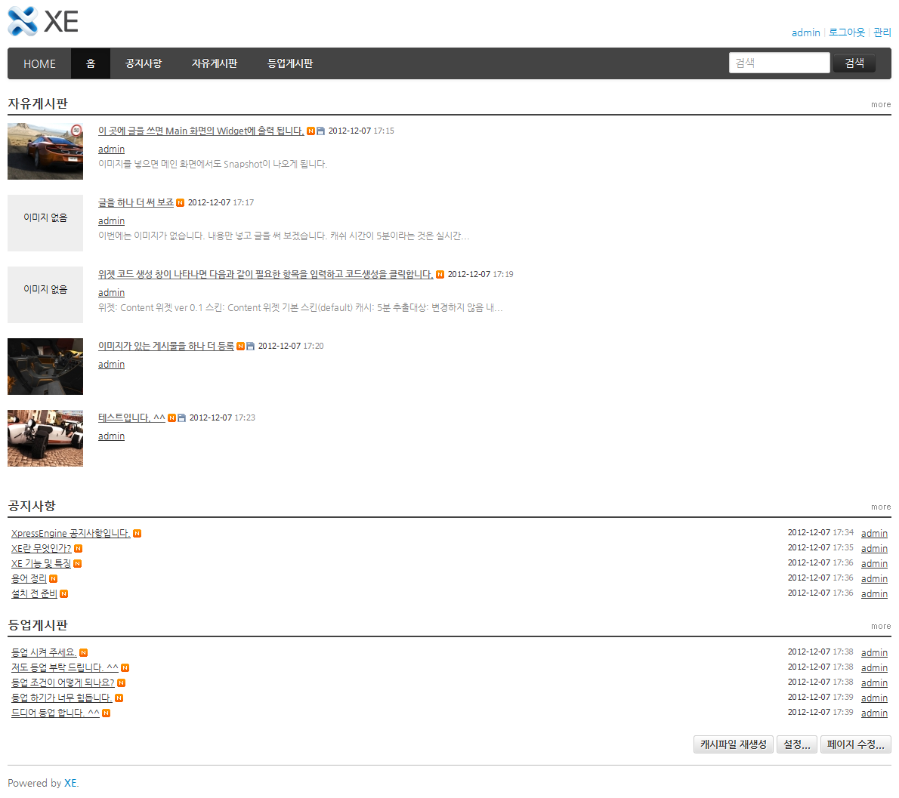
위젯 생성이 완료되었으면 이를 재배치합니다. 자유게시판 위젯은 그대로 두고 그 아래에 공지사항과 등업게시판 위젯을 가로로 나란히 배치하겠습니다.
등업게시판 위젯 영역 위로 마우스 커서를 움직여 위젯 영역 왼쪽 위에 나타나는 아이콘 메뉴 중 화살표()를 클릭합니다.
다음과 같은 위젯 설정 화면이 나타나면 등업게시판 위젯 왼쪽에 공지사항 위젯을 나란히 둘 공간을 만들기 위해 위젯 정렬 속성을 오른쪽으로 변경하고 저장을 클릭합니다.
등업게시판 위젯의 왼쪽 아래에 있는 크기 변경 핸들()을 마우스로 끌어서 오른쪽으로 이동시켜 위젯의 가로 크기를 반 정도로 줄입니다.
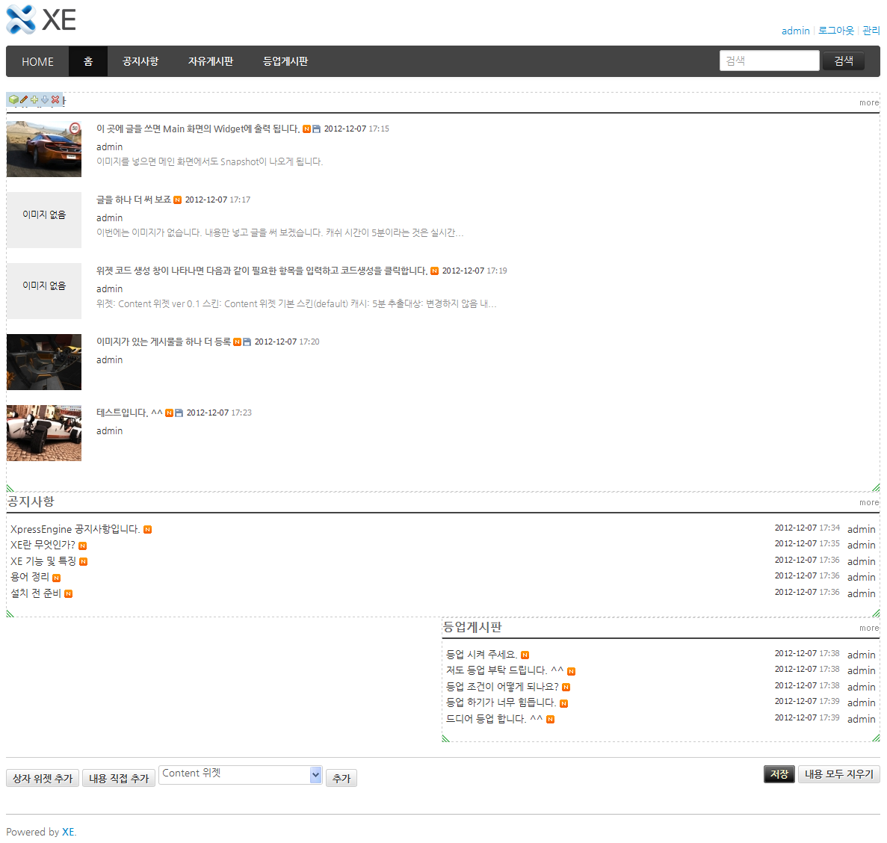
공지사항 위젯의 오른쪽 아래에 있는 크기 변경 핸들()을 왼쪽으로 끌어서 가로 크기를 줄입니다. 공지사항 위젯의 가로 폭이 등업게시판 왼쪽의 빈 공간보다 작아지면 등업게시판 위젯과 나란히 정렬됩니다
다음과 같이 정렬이 완료되면 오른쪽 아래에 있는 메뉴의 저장을 클릭합니다.
시작 메뉴 설정
설정한 메뉴들 중에 하나의 메뉴를 접속 시 기본페이지로 사용할 수 있습니다. XE 최초 설치시에는 자동으로 'welcome_menu' 메뉴의 'menu1이 '접속 시 기본페이지'로 지정되어 있습니다.
접속 시 기본 페이지는 아래와 같이 변경할 수 있습니다.
'사이트 제작/편집' > '사이트 메뉴 편집'으로 이동합니다.
원하는 메뉴를 클릭하면 나오는 서브메뉴에서 '사이트 접속 시 기본 페이지로 사용'을 클릭합니다.
XE 최초 설치시 기본페이지로 지정되어 있던 'menu1'이 '홈'으로 변경된 것을 확인할 수 있습니다.
아이디 또는 이메일 로그인 설정
회원이 사이트에 로그인 할 때 '이메일+비밀번호' 또는 '아이디+비밀번호' 형식으로 로그인 하는것을 관리자가 선택할 수 있습니다.
'회원 > 회원 설정 > 회원가입 > 가입 폼 관리' 항목으로 이동합니다.
회원 > 회원 설정 > 회원가입 > 가입 폼 관리
'아이디' 또는 '이메일 주소' 가운데 회원이 로그인 할 때 사용할 항목을 선택합니다.
'아이디'를 선택하면 사용자 로그인 화면에 '아이디' 입력 인풋이 표시됩니다.
'아이디' 입력 인풋
'이메일 주소'를 선택하면 사용자 로그인 화면에 '이메일 주소' 입력 인풋이 표시됩니다.
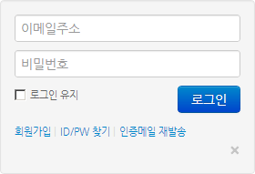
'이메일 주소' 입력 인풋
FAQ
회원설정 가입폼 관리
회원 가입폼을 커스터마이징 해서 사용할 수 있습니다. 원하는 폼 형식을 사용해서 회원 가입폼을 만들기 위해서는 다음과 같이 설정하면 됩니다.
'회원 > 회원설정 > 회원가입 > 가입 폼 관리'로 이동합니다. 아래와 같은 모습을 볼 수 있습니다.
'가입 폼 관리' 설정 화면
'사용' 컬럼에 있는 체크박스를 이용해서 회원 가입시 노출시키고 싶은 대상을 선택할 수 있습니다.
최초 설정된 내용 이외의 것을 회원 가입 시 받고 싶다면 '사용자 정의 항목 추가'를 클릭해서 새로운 form을 추가할 수 있습니다.
'회원 정의 입력' 화면
입력항목 ID는 프로그램에서 사용하는 값으로 영문, 숫자로 입력하면 됩니다. 화면에 표시 될 항목 이름은 '입력항목 제목'란에 입력하면 됩니다. 해당 form을 필수로 입력받길 원한다면 '필수/선택'란에서 '필수' 라디오에 체크를 합니다.
입력 형식은 매우 다양한 형태를 지원합니다. 원하는 형식을 선택하면 됩니다.
다양한 form 형식 지원
계정 무한 대입 방지
악의적인 목적을 가지고 로그인을 시도하는 경우를 방지하고자 로그인 실패 횟수를 제한하는 장치입니다. '계정 무한 대입 방지'를 사용하고자 할 경우에는 다음과 같이 하면 됩니다.
'회원 > 회원설정 > 로그인'으로 이동합니다. 아래와 같은 모습을 볼 수 있습니다.
로그인 설정
'계정 무한 대입 방지 사용'에 '예'를 선택합니다.
'로그인 시도 횟수 제한 횟수'에 몇번의 로그인 시도를 허용할지 원하는 숫자를 입력합니다.
'로그인 시도 횟수 제한 시간'에는 제한 횟수를 넘겼을 경우 로그인을 허용하지 않을 시간을 입력합니다.
위에서 설정한 휫수 이상 로그인이 실패할 경우 아래와 같이 표시 됩니다.
로그인 제한 초과
관리그룹, 관리자
관리그룹과 관리자와의 이름이 유사하여 혼동이 생길 수 있습니다. 관리그룹과 관리자의 차이는 아래와 같습니다.
관리그룹: '회원 > 회원 그룹'에 기본적으로 생성되는 그룹으로서 실질적 관리권한이 있는 것이 아닙니다. 각 모듈 별 '권한 관리'에서 관리권한을 '관리그룹'에게 줄 경우 해당 그룹에 속해있는 회원에게 권한이 부여됩니다.
관리자: XE를 최초 설치할 때 입력한 정보의 회원을 말하는 것입니다. 사이트의 모든 실절적 권한은 '관리자'에게 있습니다.
'임시' 문서
'콘텐츠 > 문서 > 임시'에 보면 문서목록이 보입니다. 여기에 보이게 되는 문서는 회원들이 글을 작성하는 도중 '임시 저장' 버튼을 눌러 저장한 문서입니다.
임시 저장한 문서는 다른 회원들에게 보여지지 않습니다.
임시 저장한 문서는 추후 글쓰기 화면에서 '불러오기'를 통해 다시 불러 쓸 수 있습니다.
임시 저장과 비슷한 개념으로 '자동 저장'이 있습니다. 자동 저장은 임시저장과는 달리 글쓴이가 직접 저장하는 행동을 취하지 않아도 저장되며, 글쓰기를 시작할 때 자동저장 된 글이 있으면 자동저장된 글을 불러올 것인지 물어보게 됩니다.
파일 목록의 '유효', '대기'
'콘텐츠 > 파일'에 보면 파일의 상태가 '유효'와 '대기'로 나누어 집니다. 각 상태는 아래와 같습니다.
유효: 문서를 작성하면서 파일을 등록한 후 문서 작성을 완료한 상태
대기: 문서를 작성하면서 파일을 등록하였지만 아직 문서 작성을 완료하지 않은 상태 또는 작성을 취소한 상태에서 남아있는 파일
다국어
XE는 하나의 사이트에서 여러 언어로 된 콘텐츠를 제공할 수 있도록 다국어를 지원합니다.
또한 관리자가 정의한 다국어를 등록한 다음 등록된 다국어를 사이트에서 사용할 수도 있습니다. 관리자 정의 다국어는 아래와 같은 방법으로 사용합니다.
'콘텐츠 > 다국어'로 이동합니다.
'추가'탭에서 원하는 다국어를 입력한 후 '저장' 버튼을 눌러 저장합니다.
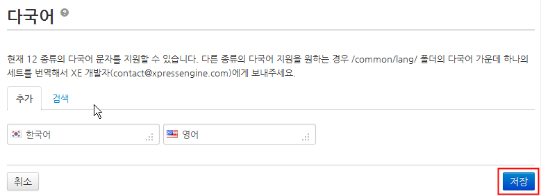
다국어 추가
이미 추가 된 다국어는 '검색' 탭에서 검색할 수 있습니다.
다국어 검색
추가된 다국어는 XE의 곳곳에서 사용 가능합니다. 하나의 예로 위에서 추가한 '한국어'란 다국어를 다음과 같이 활용할 수 있습니다.
'사이트 제작/편집 > 사이트 메뉴 편집'으로 이동합니다.
특정 메뉴를 선택 후 '메뉴 수정'을 클릭합니다.
메뉴 수정 화면에서 '메뉴 이름' 옆에 나오는 지구본 모양 아이콘을 클릭합니다.
메뉴 이름 수정
다국어 추가, 검색 대화창이 열립니다. 여기서 '검색' 탭을 클릭하고 바로 전에 입력한 '한국어'를 클릭합니다. 다국어가 많을 경우에는 검색을 활용합니다. 검색 입력 폼 앞의 select 옵션을 선택하면 각 언어별로 검색할 수 있습니다. '한국어'가 다국어로 어떻게 쓰일지 보여지고 확인을 하였다면 우측 하단의 '사용' 버튼을 누릅니다.
다국어 사용
아래와 같이 적용 된 것을 볼 수 있습니다. 적용된 다국어를 사용하고 싶지 않을 경우에는 X 버튼을 눌러 적용 해제할 수 있습니다.
다국어 적용된 모습
위와 같이 설정을 마치고 나면 해당 메뉴는 한국어와 영어 모두 지원 됩니다. 한국어로 설정하면 '한국어'라는 메뉴가, 영어로 설정하면 'English'라는 메뉴가 노출되게 됩니다.
관리자 접속 아이피 대역 관리
관리자의 아이디와 비밀번호만 알게 되면 관리자로 어느 곳에서나 로그인이 가능합니다. 따라서 관리자 아이디로 접속할 수 있는 아이피 대역을 제한해 두면 보안에 유리합니다.
관리자의 아이디로 접속할 수 있는 아이피 대역을 설정하기 위해서는 다음과 같이 하면 됩니다.
'설정 > 일반'을 접속합니다.
'고급'의 '관리자 IP대역'에 원하는 IP를 입력합니다.
관리자 IP 대역 입력
ip를 직접 수정하고 싶으신 분은 'XE설치폴더/files/db.config.php'의 "$db_info->admin_ip_list = '127.0.0.1,127.0.0.2';" 부분을 수정해 주면 됩니다.
관리자 아이디로 로그인 하였지만 ip 제한에 걸린 경우에는 다음과 같은 모습을 보게 됩니다.
관리자 접속 제한
SSL 접속
일반 접속은 사용자와 서버간에 전송되는 내용이 암호화되지 않아 중요한 정보가 악의적인 사용자에 의해 탈취당할 수 있습니다. 이를 방지하기 위해 SSL 접속을 사용할 수 있습니다.
XE에서는 SSL 접속을 '선택적'으로 또는 '항상' 사용할 수 있습니다.
선택적으로 사용할 경우에는 '회원가입', '정보 수정' 등에서만 SSL 접속을 유지합니다.
관련 설정은 '설정 > 일반 > 고급 > SSL(Secure Sockets Layer) 사용'에서 선택할 수 있습니다.
참고
서버에 SSL이 설치되어 있지 않은 경우에는 접속 기능이 동작하지 않습니다. 먼저 SSL이 설치되어 있는지 확인 후 사용하시기 바랍니다.
짧은 주소
짧은 주소는 복잡하고 어려운 XE의 주소를 간단하게 사용할 수 있도록 줄여주는 기능입니다. 짧은 주소를 사용하게 되면 아래와 같은 이점이 있습니다.
짧은 주소: http://xemanual.com/freeboard/123
원래 주소: http://xemanual.com/index.php?mid=freeboard&document_srl=123
짧은 주소를 사용하길 원할 경우에는 '설정 > 일반 > 고급 > 짧은 주소 사용'에 '예'를 선택한 후 '저장'하면 됩니다.
데이터 들여오기
제로보드4, zb5beta 또는 다른 프로그램의 데이터를 XE 데이터로 이전할 수 있습니다. 데이터의 추출은 공식사이트의 자료실에서 다운로드 받으시거나 Git을 통해 migration tool 저장소를 clone 하시면 됩니다.
XE의 '게시물 정보'를 다른 XE사이트 게시물로 이전하는 작업을 예로 들어 설명해 드리도록 하겠습니다.
다운로드 받은 소스를 URL로 접근 가능한 곳에 압축을 풉니다. 이 예제에서는 XE의 URL이 http://example.com/xe/라면 http://example.com/migration/ 아래로 하겠습니다.
브라우져로 http://example.com/migration/index.php으로 접근하면 아래와 같은 모습을 볼 수 있습니다.
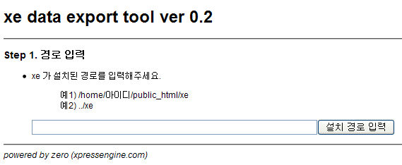
XE data export 초기화면
2번에서 이야기한 url에 근거해 '설치 경로 입력'란에 "../xe" 라고 입력합니다. 절대 경로로 입력해도 됩니다. 사용자에 따라 입력 경로가 달라질 수 있습니다.
설치 경로 입력 후 '설치 경로 입력' 버튼을 누르면 아래와 같은 모습을 볼 수 있습니다.
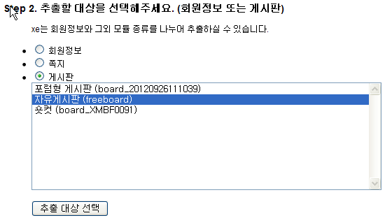
추출 대상 선택
이 예제에서는 게시물 정보를 이전할 예정이니 '게시판'을 선택 후 '자유게시판'을 선택합니다. 선택 후 '추출 대상 선택' 버튼을 누릅니다.
아래와 같은 결과가 나옵니다.
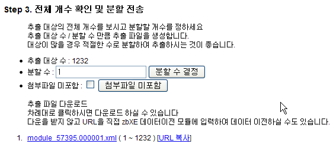
추출 옵션 선택 및 다운로드
분할 수는 추출하는 데이터를 몇개의 파일로 나누어서 받을 지 결정하는 것입니다. 여기서는 게시물의 수가 많지 않으므로 1개로 받도록 하겠습니다.
첨부파일을 포함하고 싶지 않을 경우에는 '첨부파일 미포함'에 체크를 합니다.
데이터 들여오기 시 실제 xml 파일을 서버에 올려놓아 사용하거나 URL을 복사해서 사용할 수 있습니다. 여기서는 실제 xml 파일을 다운로드 받아 사용하도록 하겠습니다.
옵션을 모두 결정했다면 파일명(module_57395.000001.xml)을 눌러 다운로드를 받습니다.
다운로드 받은 파일을 xe가 설치된 위치에 업로드 합니다.
관리자의 '콘텐츠 > 데이터 들여오기'로 들어갑니다.
'게시물 정보'의 xml 파일 입력 폼에 파일 명을 아래와 같이 입력한 후 '경로 확인' 버튼을 누릅니다.
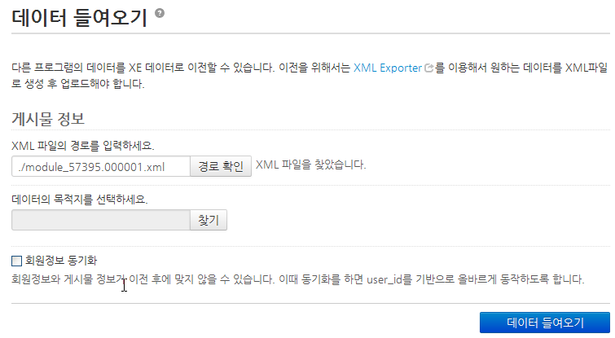
경로 확인
참고
실제 파일이 아니라 export에서 복사한 url을 입력해도 됩니다.ex) http://example.com/migration/export.php?filename=module_57395.000001.xml&path=..%2Fmaserati&target_module=module&module_id=57395&start=0&limit_count=1232&exclude_attach=
'XML 파일을 찾았습니다.'란 메시지가 뜨면서 추가 입력상자가 보이게 됩니다. 'XML 파일을 찾을 수 없습니다.'라는 메시지가 보이게 되면 경로가 잘못 입력한 것이니 경로를 위치가 맞는지 확인해 보아야 합니다.
'찾기' 버튼을 통해 어떤 메뉴로 데이터를 이전할 것인지 선택합니다.
회원 아이디 기반으로 회원정보를 동기화 시키고 싶다면 '회원정보 동기화' 체크박스에 체크합니다.
필요한 내용을 모두 입력하였으면, '데이터 들여오기' 버튼을 클릭합니다. 아래와 같이 '데이터 이전중입니다'라는 프로그레스바가 보이면서 데이터가 이전 됩니다.
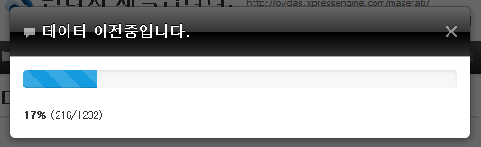
데이터 이전 중
참고
데이터 이전에는 오랜 시간이 걸릴 수 있으므로, 게시물의 수가 많을 경우에는 분할하여 이전하시고 프로그레스바가 표시 중일때는 브라우져를 새로고침하지 말고 기다려 주시기 바랍니다.
데이터 이전이 완료되면 아래와 같이 메시지가 나타납니다.
데이터 이전 완료
관리자 메뉴 초기화
관리자 메뉴는 "설정 > 관리자 설정"에서 추가, 삭제할 수 있습니다. 추가, 삭제후 최초의 관리자 메뉴로 되돌리고 싶을 경우 '관리자 메뉴 초기화'를 할 수 있습니다. 관리자 메뉴 초기화를 하게 되면 XE 최초 설치시 설정 된 관리자 메뉴로 복원 됩니다.
캐시파일 재생성
XE는 최적의 성능을 내기 위해 각종 캐시 파일을 사용합니다. 하지만 캐시 파일이 최신 내용의 적용되지 않음으로 인해 문제가 발생할 수 있습니다. 이럴 경우에는 관리자 하단에 있는 '캐시파일 재생성'을 통해 캐시파일을 새롭게 만들어 줄 수 있습니다.
참고
XE의 모든 기능에 캐시 기능이 들어 있는 것이 아니며, 캐시파일 재생성 역시 모든 기능에서 지원하는 것이 아닙니다. 따라서 캐시파일 재생성을 지원하는 기능에 한해 동작하게 됩니다.
세션 정리
오랜기간 사이트를 운영하다 보면 사용자의 정보 등을 담고 있는 세션들 중 일부 데이터가 가비지(찌꺼기) 데이터가 되는 경우가 있습니다. 이로 인해 사이트 자체가 느려지게 될 수 있습니다. 이럴 경우 '세션 정리'를 하게 되면 사이트의 속도 향상에 도움이 됩니다. 세션 정리의 경우 사이트에 부하가 발생할 수 있으므로 접속자가 적은 시간 또는 사이트의 운영을 중지한 상태로 진행하시기 바랍니다.
문서 페이지
'회사 소개'와 같이 거의 갱신할 필요가 없는 정적인 문서입니다. 관리자는 '글, 이미지, 멀티미디어' 등을 문서 페이지에 직접 작성하거나 수정할 수 있습니다. 만약 프로그램에 의해 동적으로 갱신되는 콘텐츠를 문서에 삽입하고 싶다면 '문서 페이지' 대신 '위젯 페이지'를 사용하세요.
위젯 페이지
'초기 화면'과 같이 수시로 갱신할 필요가 있는 동적인 문서입니다. '문서 페이지'와 같이 정적인 내용을 추가할 수도 있지만 각종 '위젯'을 삽입하면 동적인 내용을 출력할 수 있습니다. 위젯 페이지에 '콘텐츠 위젯'을 삽입함으로써 초기 화면에 최근 게시물을 표시할 수 있습니다.
외부 페이지
'사이트 제작/편집 > 사이트 메뉴 편집'에서 메뉴 추가 시 '외부 페이지' 타입이 있습니다. 여기서 말하는 '외부 페이지'란 XE의 모듈을 이용하지 않고 별도로 개발자가 작성한 페이지를 말합니다. 외부 페이지는 3rd party 개발자가 작성한 프로그램 소스가 들어가 있을 수 있으며, 아니면 순수 html로만 만들어진 경우도 있습니다.
외부 페이지에서도 XE의 모듈 개발시 사용되는 기본적인 라이브러리 사용이 가능합니다.
참고
메뉴 추가의 '바로가기' 타입에서 URL링크를 통해 추가할 수 있는 것과는 다른 개념입니다.
바로가기
'사이트 제작/편집 > 사이트 메뉴 편집'에서 메뉴 추가 시 '바로가기'가 있습니다. 여기서 말하는 '바로가기'란 이미 만들어져 있는 메뉴 또는 외부 링크를 연결하는 메뉴입니다. 윈도우의 바로가기와 비슷한 메뉴라고 보면 됩니다.
윈도우의 '바로가기' 삭제 시 원본이 삭제 되지 않는 것처럼, XE에서도 바로가기 메뉴 삭제시 원본 메뉴에는 영향을 미치치 않습니다.
메뉴 노출 대상
'사이트 제작/편집 > 사이트 메뉴 편집 > 권한'에 '메뉴 노출 대상'이 있습니다. '메뉴 노출 대상'은 다른 권한과는 달리 접근 자체를 제한하는 기능은 없습니다. 다만 메뉴를 보여주고 싶지 않은 대상일 경우 노출을 제한할 수 있습니다.
예를 들어 아래와 같이 노출 대상은 '로그인 사용자', 접근 권한은 '모든 사용자'로 설정을 하게 될 경우, 로그인을 안한 사용자에게 메뉴는 보이지 않지만 접근 URL을 알고 있다면 해당 메뉴에 접근할 수 있습니다.
권한 설정
부록
Windows 환경 설정
Windows 환경에서 XE를 설치하는 방법에는 크게 두 가지가 있습니다. WPI를 사용하는 방법과 APMsetup을 사용하는 방법입니다. 두 가지 방법 모두 웹 서버인 IIS(Internet Information Server)를 설치할 때 포트 번호로 80을 사용하도록 설정하기 때문에, 한 컴퓨터에 두 가지 방법을 모두 사용할 수 없습니다. 사용자의 설치 환경에 따라 두 가지 방법 중 하나를 선택해서 사용합니다.
참고
Windows XP에서 WPI를 사용하여 XE를 설치하면 URL을 기억하기 쉽게 줄여주는 mod_rewrite를 사용할 수 없습니다. mod_rewrite를 사용하려면 APMsetup을 사용해서 XE를 설치해야 합니다.
WPI로 패키징된 XE는 1.4.0.5 버전입니다. 최신 버전의 XE를 설치하려면 APMsetup을 사용하거나, WPI를 사용해서 설치한 후에 XE core를 별도로 업데이트해야 합니다.
계정 설정
Windows 계열 서버에 XE를 설치하려면 서버에 접근할 수 있는 계정이 필요합니다. 서버 계정은 서버 관리자에게 문의하여 얻습니다. 서버를 직접 관리하는 경우에는 기존 계정을 사용하거나 새로운 계정을 생성하여 사용합니다.
계정 이름을 정하고 나면 계정 유형을 선택할 수 있습니다. 서버 보안을 유지하기 위해 가능하면 제한된 계정을 선택하여 해당 계정의 권한을 최소화하는 것을 권장합니다.
원격 데스크톱 연결
서버를 직접 조작할 수 없을 경우 원격에서 서버에 접속하여 조작할 수 있는 방법이 필요합니다. Windows 시스템은 다른 컴퓨터에 접속하여 조작할 수 있게 하는 '원격 데스크톱 연결' 프로그램을 제공합니다.
원격 데스크톱 연결을 사용하려면 서버의 도메인 주소나 IP 주소가 필요합니다. 이미 도메인 설정이 되어 있으면 설정된 도메인을 사용하여 접속하면 되지만, 그렇지 않은 경우 IP 주소를 사용해야 합니다. 서버의 IP 주소를 확인하고 원격 데스크톱 연결로 그 주소에 접속하는 방법은 다음과 같습니다.
Windows 서버의 명령 프롬프트를 실행합니다.
ipconfig 명령어를 입력해서 서버의 IP 주소를 확인합니다.
내 컴퓨터에서 시작 > 보조프로그램 > 원격 데스크톱 연결을 실행하거나, 명령 프롬프트에서 mstsc를 실행합니다.
원격 데스크톱 연결 창이 나타나면 컴퓨터에 연결할 서버의 주소를 입력하고 연결을 클릭합니다.
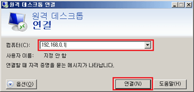
콘텐츠 관리 탭의 응용 프로그램 목록 중에서 XpressEngine을 찾아 선택하고 설치를 누릅니다.
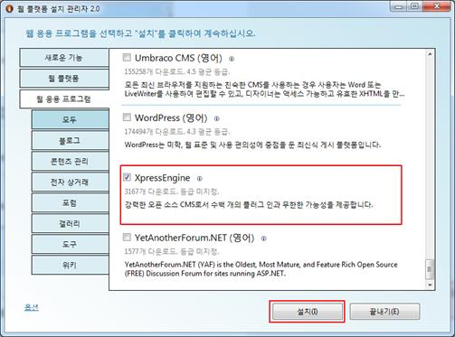
XE core를 설치하기 위해 추가로 설치 및 설정되는 구성 요소 정보를 확인하고 동의함을 클릭하여 설치합니다.
추가 구성 요소의 설치
추가로 설치되는 구성 요소 중에 MySQL DBMS가 포함되어 있으면 MySQL DBMS을 설치하면서 관리자 암호를 지정해야 합니다. 관리자 암호를 지정하는 화면이 나타나면 암호를 지정하고 계속을 클릭합니다.
참고
WPI에서 MySQL 관리자 암호를 처음 지정할 때, 영소문자, 영대문자, 숫자, 기호가 모두 포함된 암호를 지정해야 합니다. MySQL 관리자 암호는 XE를 설치할 때 반드시 필요한 정보이므로 꼭 기억해 두어야 합니다.
계정 설정이 완료되면 구성 요소가 설치됩니다.
XE 설치에 필요한 정보 입력
XE 설치에 필요한 구성 요소의 설치가 끝나면 XE 설치가 시작됩니다.
다음과 같이 XE를 설치할 사이트 정보를 입력하고 계속을 클릭합니다.
특별히 추가로 설정할 내용이 없다면 기본 설정을 그대로 사용합니다.
다음과 같이 XE core 설치 정보를 입력하고 계속을 클릭합니다.
데이터베이스:
XE에서 사용할 DBMS의 종류. 이 문서에서는 MySQL을 선택합니다.
새 데이터베이스 만들기 또는 기존 데이터베이스 사용:
기존의 데이터베이스를 사용하여 XE를 운영할 것인지, 새 데이터베이스를 사용할 것인지 선택. 가능하면 새 데이터베이스 만들기를 권장합니다.
데이터베이스 관리자:
선택된 DBMS의 관리자 ID. 이 문서에서 사용된 MySQL의 관리자 ID는 root입니다.
데이터베이스 관리자 암호:
선택된 DBMS의 관리자 암호. "추가 구성 요소의 설치"에서 지정한 MySQL 관리자 암호를 입력합니다.
데이터베이스 사용자 이름:
XE에서 데이터베이스에 접근할 때 사용할 사용자 이름
데이터베이스 암호:
XE에서 데이터베이스에 접근할 때 사용할 사용자 암호
데이터베이스 서버:
DBMS가 설치된 위치를 URL 형식으로 지정. 이 문서에서는 서버와 DBMS가 같은 컴퓨터에서 동작하므로 localhost를 입력합니다.
데이터베이스 이름:
XE에서 사용할 기존 혹은 새 데이터베이스의 이름
데이터베이스 테이블 접두사:
XE에서 생성한 테이블 이름에 사용할 머리말
XE 관리자 ID:
XE 관리자 ID
XE 관리자 이름:
XE 관리자 이름
XE 관리자 닉네임:
XE 관리자 계정의 별명
XE 관리자 패스워드:
XE 관리자 계정의 패스워드
XE 관리자 e-mail 주소:
XE 관리자 계정의 e-mail 주소
URL Rewrite 사용 여부:
mod_rewrite 사용 여부. 이 항목을 활성화하면 URL을 기억하기 쉽게 줄여서 사용할 수 있습니다.
GMT Timezone:
XE가 서비스할 지역의 표준시
설치 확인
모든 설치 과정이 완료되면 웹 브라우저를 사용하여 사이트에 접속합니다. 정상적으로 설치가 완료되었으면 다음과 같은 화면이 나타납니다.
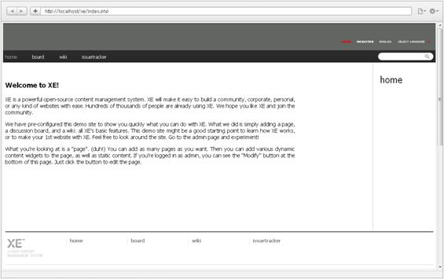
XE 설치 완료 화면
참고
WPI를 사용해서 XE를 설치하면 최신 버전의 XE core가 설치되지 않습니다. XE core를 최신 버전으로 업데이트하려면 공식사이트에서 제공하는 XE core 최신 버전 파일을 다운로드해서 압축을 해제한 후 XE 설치 사이트 최상위 폴더(C:\Inetpub\wwwroot\xe)에 덮어 쓰도록 합니다.
APMsetup 사용
APMsetup은 XE를 설치하는 데 필요한 구성 요소인 아파치 웹 서버, PHP, MySQL 데이터베이스를 한 번에 설치하고, 사용에 필요한 연동 설정을 자동으로 해 주는 프로그램입니다.
APMsetup 설치
다음과 같이 APMsetup을 설치합니다.
APMsetup 공식 사이트(http://www.apmsetup.com)에서 최신 APMsetup 설치 파일을 다운로드합니다. 문서 작성 시점에 배포되어 있는 최신 버전은 APMsetup 7입니다.
다운로드한 설치 파일을 실행합니다. 특별한 설정이 필요 없으면 기본 설정 상태로 설치를 진행하여 완료합니다.
참고
APMsetup은 아파치 웹 서버를 설치할 때 포트 번호로 80을 사용하도록 설정합니다. 그러므로 시스템에 이미 포트 번호로 80을 사용하는 소프트웨어가 있을 경우에는 APMsetup을 정상적으로 설치할 수 없습니다.
http://localhost/로 접근해서 다음과 같은 페이지가 나타나는지 확인합니다.
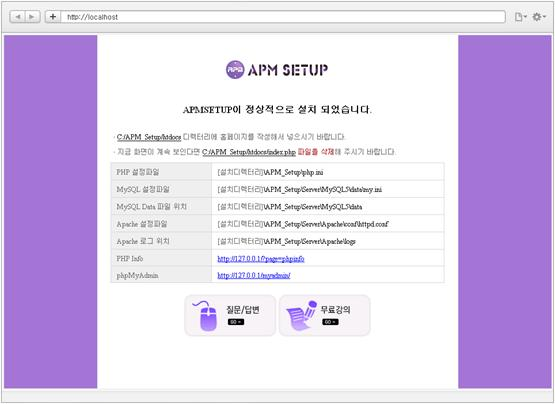
APMsetup 설정
APMsetup 설정에서는 DB root 계정 패스워드를 변경하고 새로운 계정을 생성합니다. 이 과정이 XE를 설치하는 데 필수 조건은 아니지만 서버 보안을 위해서 아래와 같이 설정하기를 권장합니다.
작업 표시줄에 있는 APMsetup의 아이콘()을 마우스 오른쪽 버튼으로 클릭하고, APMsetup 설정 메뉴에서 MySQL root 패스워드 변경을 선택합니다.
현재 MySQL root계정 패스워드에 초기 패스워드인 apmsetup을 입력하고, 새 패스워드를 입력한 후 MySQL root계정 패스워드 변경을 클릭합니다.
참고
이 문서는 APMsetup 7을 기준으로 설명합니다. 초기 패스워드가 apmsetup이 아니면 APMsetup 공식 사이트에서 설치하고 있는 APMsetup 버전의 초기 패스워드를 확인하시기 바랍니다.
XE를 설치할 때 사용할 새로운 데이터베이스 계정과 데이터베이스를 생성하기 위해 APMsetup 설정 메뉴에서 MySQL 신규 계정 생성을 선택합니다.
MySQL 계정 생성 창이 나타나면 계정 생성 정보를 입력하고 신규 계정 생성을 클릭합니다.
현재 MySQL root계정 패스워드에 변경한 MySQL 관리자 패스워드를 입력하고, 생성할 MySQL 계정 아이와 패스워드, 디비명에 사용자가 원하는 값을 입력합니다. 연결 문자 집합과 정렬은 기본값을 그대로 사용합니다.
참고
새로 생성할 MySQL 계정과 패스워드, 데이터베이스 이름은 XE를 설치하는 데 필요한 정보이므로 꼭 기억해 두어야 합니다.
XE core 설치 파일 압축 해제
\APM_setup\htdocs에 XE core 최신 설치 파일의 압축을 해제합니다.
압축 해제가 완료되면 xe 디렉터리가 생성된 것을 확인할 수 있습니다. 도메인 경로로 웹 페이지에 접근하려면 생성된 xe 디렉터리 하위 내용을 최상위 디렉터리로 이동시킵니다.


 )를 클릭합니다.
)를 클릭합니다. )를 클릭합니다.
)를 클릭합니다.
 )을 마우스로 끌어서 오른쪽으로 이동시켜 위젯의 가로 크기를 반 정도로 줄입니다.
)을 마우스로 끌어서 오른쪽으로 이동시켜 위젯의 가로 크기를 반 정도로 줄입니다.